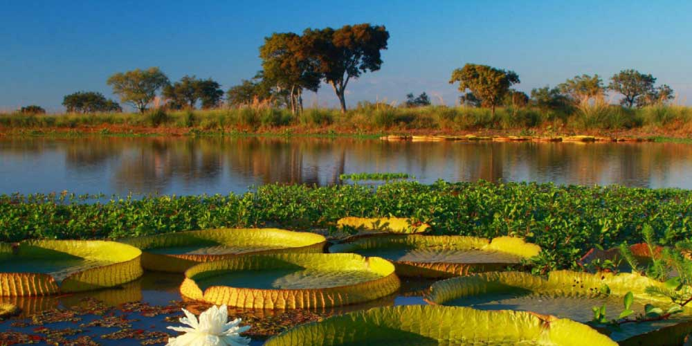
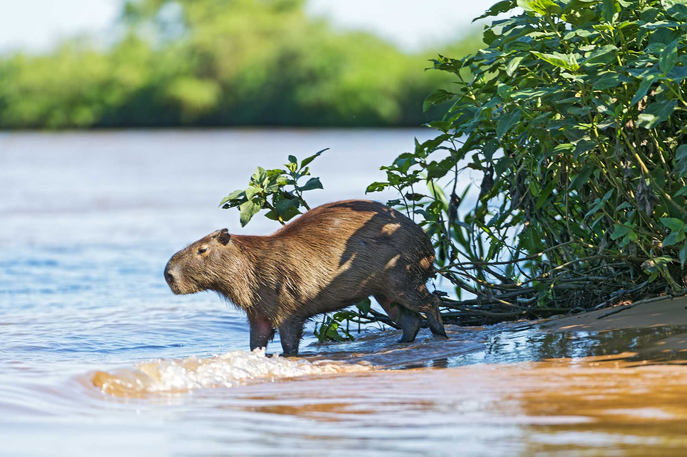
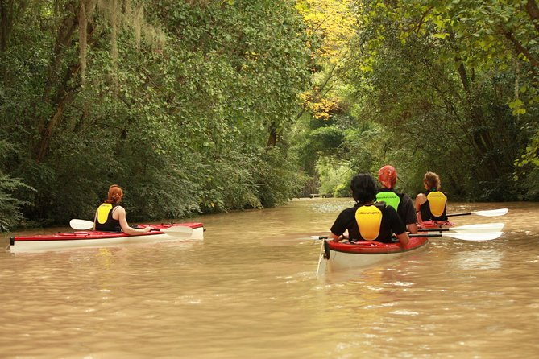
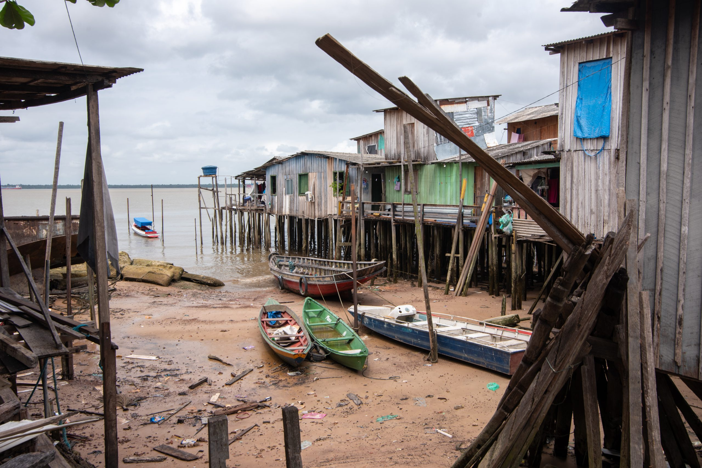
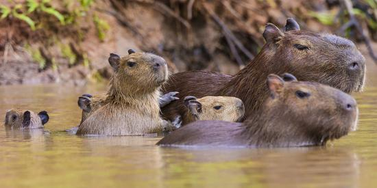
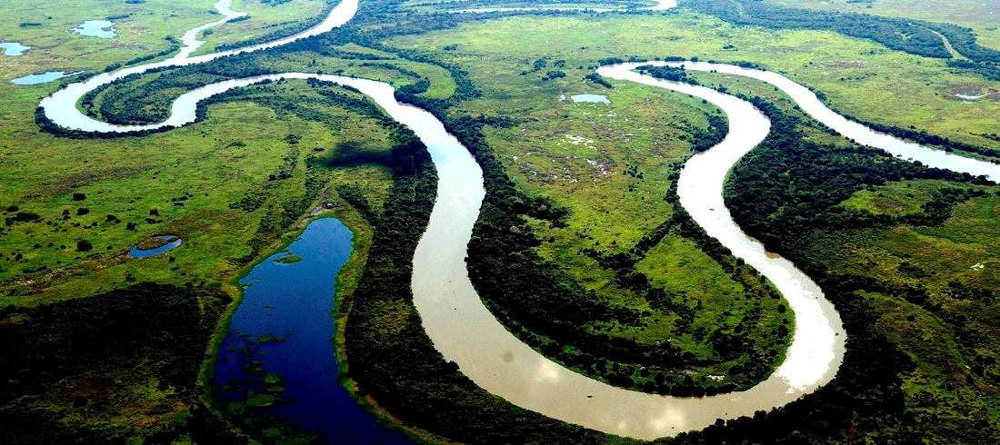
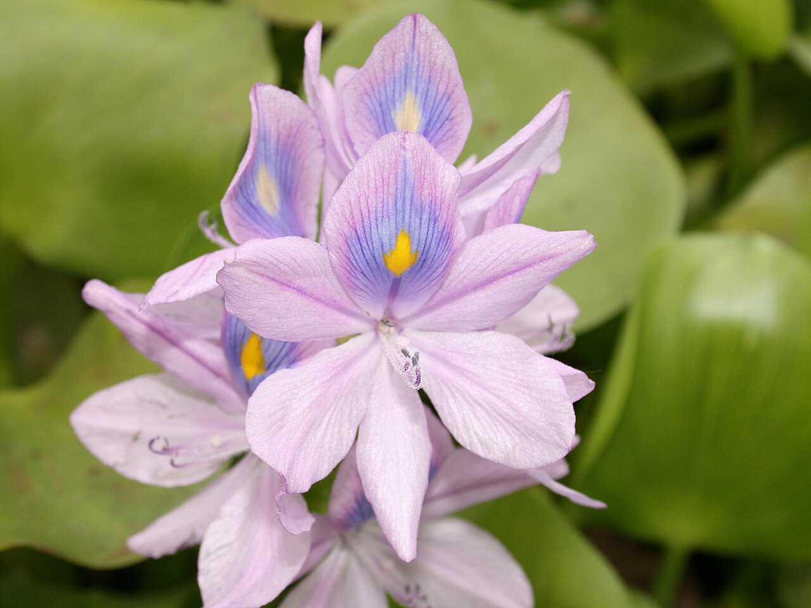

© Argentina TourismWhen to Visit
Running from March through May, autumn is the ideal time to visit the Paraná Delta. The summer heat gives way to comfortable temperatures, the wetlands are lush and teeming with wildlife, and the waterways run calm and clear. It is the perfect season to explore the labyrinth of islands by kayak, wander the stilt-house communities of Tigre, and watch the fog roll in over the channels at sunrise.
Spring (September to November) is an excellent second option, with pleasant warmth and spectacular birdlife as species return to nest. Avoid the height of summer, when humidity can be intense and seasonal flooding occasionally disrupts access to some islands.

© Wildlife ArgentinaWildlife You Will Not Forget
The Paraná Delta is a biodiversity hotspot unlike any other in South America. Over 300 bird species inhabit its wetlands and forests, from the scarlet-headed blackbird to the jabiru stork. Along the water's edge, you may spot capybaras grazing in family groups, or the elusive Marsh Deer emerging from the reeds at dusk.
The flora is equally extraordinary. "Monte Blanco" forests of ceibo, timbó, and sarandí line the islands, while vast floating meadows of water hyacinth drift through the channels. The entire ecosystem acts as a natural water purifier for the greater Buenos Aires region, making conservation here a matter of regional importance.

© Tigre TourismA River Worth Exploring
Stretching 4,880 kilometres from the Brazilian highlands to the Río de la Plata, the Paraná is one of the great rivers of the world. Uniquely, its delta does not empty into the open ocean but into another river, creating a vast, freshwater maze of channels, oxbow lakes, and floating islands that shifts and changes shape with every flood season.
Exploring by kayak or wooden rowboat is the most intimate way to experience the delta. You drift past vine-draped banks, hear nothing but birdsong and water, and arrive at tiny island communities reachable only by boat, where life moves at the pace of the current.

© Tigre Municipal TourismHistory, Culture & the Isleño Way
The delta was first navigated by the Guaraní people, who mastered its waterways long before European contact. In the late 19th and early 20th centuries, waves of European immigrants settled the islands, building the distinctive palafitos — stilt houses perched above the floodwaters — that define the landscape of towns like Tigre today.
Modern delta life retains a remarkable sense of isolation and community. There are no cars on the islands. Boats are the school bus, the delivery van, the ambulance. Children row themselves to school. Neighbours call to each other across the water. This is the "Isleño" way, and experiencing it even briefly is to step into a world that feels entirely its own.
Activities &
Adventures
Discover the many ways to experience the Paraná Delta, from silent kayak journeys to the vibrant pulse of nearby Buenos Aires.
Delta Gallery
 © NASA / ESA
© NASA / ESA

© Wildlife Argentina
© Tigre Tourism Board
© CONICET Argentina